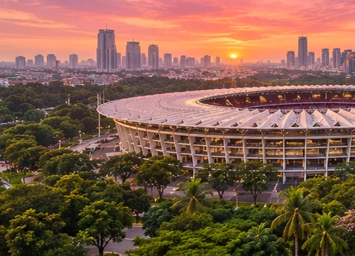

Ruang terbuka · Taman
Hutan Kota
Ruang terbuka di kawasan GBK. Hutan Kota tercantum sebagai salah satu area yang dikelola bersama unit Parkir Timur.
14.000m² area dalam spesifikasi sewa

Sebelum datang.
Cek akses kawasan sebelum berangkat, terutama saat berlangsung kegiatan. Untuk pemanfaatan area, pelajari panduan penggunaan area.